Heads Up!
This project is in Beta. That means we’re still testing it, and there’s a small chance there could be some bugs or typos. If you’re a club leader trying out this project, please complete this short questionnaire (or email ) to let us know how it went!
Introduction
You are going to learn how to make a game, in which you’ll use the mouse to control a boat. You must try to get to the desert island, avoiding the wooden barriers. The white arrows boost your boat and make it go faster.

Step 1: Controlling a boat
Activity Checklist
Start a new project, and delete the cat sprite, so that your project is empty.
For this project, you should have a ‘Resources’ folder, containing all of the images you’ll need. Make sure that you can find this folder, and ask your club leader if you can’t find it.

From this ‘Resources’ folder, import ‘background.png’ as the stage backdrop and ‘boat.png’ as a new sprite.
Rename your sprite ‘Player 1’, shrink it slightly, and move it to the bottom of the stage.
Your project should look like this:

You are going to control the boat with your mouse. Add this code to your boat:
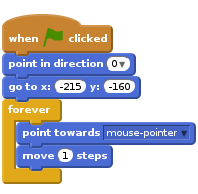
Test out your boat, by clicking the flag and moving the mouse. Does the boat sail towards the mouse?

Have a look what happens when the boat reaches the mouse pointer.
To stop this happening, you’ll need to add an
ifblock to your code, so that the boat only moves if it is more than 5 pixels away from the mouse.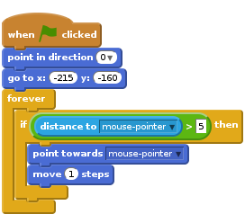
Test out your boat again, to check whether the problem has been fixed.
Save your project
Step 2: Crashing!
Your boat can sail through the wooden barriers! Let’s fix that.
Activity Checklist
You’ll need 2 costumes for your boat, one normal costume, and one for when the boat crashes. Duplicate your boat costume, and name them ‘hit’ and ‘not hit’.
Click on your ‘hit’ costume, and choose the ‘Select’ tool to grab bits of the boat and move and rotate them around. Make your boat look as if it’s crashed.

Add this code to your boat, inside the
foreverloop, so that it crashes when it touches any brown wooden barriers: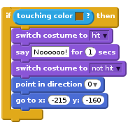
This code is inside the
foreverloop, so that your code keeps checking if the boat has crashed.You should also make sure that your boat always starts looking like it’s ‘not hit’.
Now if you try to sail through a wooden barrier, you should see that your boat crashes and moves back to the start.

Save your project
Challenge: Winning!
Can you add another if statement to your boat’s code, so that the player wins when they get to the desert island?
When the boat gets to the yellow sand, it should say ‘YEAH!’ and then the game should stop. You’ll need to use this code:
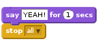

Save your project
Challenge: Sound effects
Can you add sound effects to your game, for when the boat crashes, or reaches the island at the end. You could even add background music (see the previous ‘Rock Band’ project if you need help with this).
Save your project
Step 4: Time Trial
Let’s add a timer to the game, so that the player has to get to the desert island as fast as possible.
Activity Checklist
Add a new variable called
timeto your game. You can also change the display of your new variable. If you need help, have a look at the ‘Balloons’ project.
Add this code to your stage, so that the timer counts up until the boat reaches the desert island:
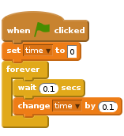
That’s it! Test out your game and see how quickly you can get to the desert island!

Save your project
Step 4: Obstacles and power-ups
This game is far too easy - let’s add things to make it more interesting.
Activity Checklist
First let’s add some ‘boosts’ to your game, which will speed up the boat. Edit your stage backdrop and add in some white booster arrows.

You can now add some code to your boat’s
foreverloop, so that it moves 2 extra steps when touching a white booster.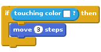
You can also add in a spinning gate, which your boat has to avoid. Add in a new sprite called ‘Gate’, which looks like this:

Make sure that the colour of the gate is the same as the other wooden barriers.

Set the center of the gate sprite.

Add this code to your gate, to make it spin slowly:

Test out your game. You should now have a spinning gate that you must avoid.

Save your project
Challenge: More obstacles!
Can you add more obstacles to your game? Here are some ideas to help you:
- You could add more wood to your backdrop, to make your game more difficult.

- You could add green slime to your backdrop, which slows the player down when they touch it. You can use a
waitblock to do this:

- You could add a moving object, like a log or a shark! These blocks may help you:
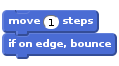
If your new object isn’t brown, you’ll need to add to your boat code:
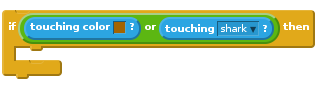

Save your project
Challenge: More boats!
Can you turn your game into a race between 2 players?
- Duplicate the boat, rename it ‘Player 2’ and change its colour.

- Change Player 2’s starting position, by changing this code:
- Delete the code that uses the mouse to control the boat:
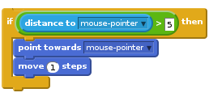
…and replace it with code to control the boat using the arrow keys.
This is the code you’ll need to move the boat forward:
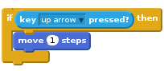
You’ll also need code to turn the boat when the left and right arrow keys are pressed.
Save your project
Challenge: More levels!
Can you create additional backdrops, and allow the player to choose between levels?
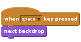